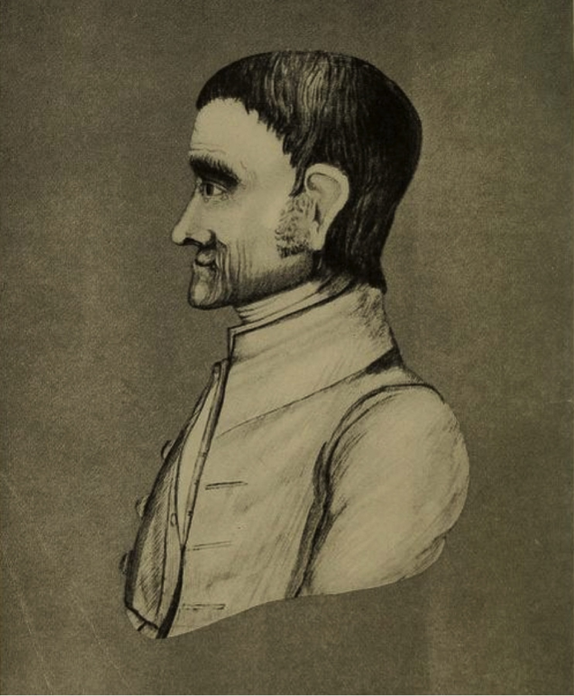

如果学习也被当作 Meeting，会发生什么？
Parker J. Palmer 观察到，Friends 用 “meeting” 描述 Worship、Business、婚礼、纪念等不同场合并非偶然：这些场合都可以在同一种 search for truth 的精神中举行。于是他进一步提出 Meeting for Learning。
这并不是给课堂加几分钟静默，而是重新理解学习：知识不是老师“装进”学生头脑里，而是在人—人—第三物的关系中出现。
第三物为什么如此重要？
如果只有“我和你”，对话很容易滑向互相分析、讨好、辩论或交换主观感受。第三物——一首诗、一段电影、一个数据集、一则案例、一幅画——让关系有一个共同中心。
Palmer 认为第三物有自己的现实性，它可以打破两个人之间的封闭，让双方同时聆听一个“不是你，也不是我”的东西。

一张历史肖像，也可以成为“第三物”
不要先问“这是谁、代表什么”。可以先观察：姿态、服饰、绘画方式、后来添加的符号；再查看来源说明。John Woolman 这张图本身就带着不确定性——来源页把它描述为很可能出自同时代友人之手，但又包含后来时代的元素。学习因此不是“认图”，而是让对象反过来挑战我们的快速判断。
Probably Robert Smith III · Public domain in U.S. · 查看原始来源 ↗Meeting for Learning 背后，其实是一种知识观
Palmer 的激进之处，不只是课堂设计。他认为学习发生在关系里：个人经验重要，却要公开地放到群体中接受检验；群体重要，却不能成为新的权威；文本重要，却不能因为“写在书里”就免于追问。
因此学习不是把知识从一个已经拥有者搬运给另一个空容器，而是让人、他人和对象彼此校正。真正要信任的，最终不是老师、群体或技巧，而是一个超出我们控制的 Truth。
Meeting for Learning 的五条纪律
文本值得尊重，但不能仅因“书上这样写”就终止探寻。
允许说“不知道”，让疑惑重新成为学习动力。
老师拥有专业资源，但不垄断 insight；学生也可能成为下一刻的“老师”。
个人 insight 需要放到群体中检验，却不等于服从多数。
有些时刻需要停止讲话，让 insight 沉淀；学习不只有 problems to solve，也有 mysteries to ponder。
一场 90 分钟共读，如何从“读书会”变成 Meeting for Learning？
教师 / 带领者的角色反而更难
Palmer 并没有因为“群体平等”而削弱教师。相反，教师既要有内容专业，也要有能力照看一个可以被成员信任的群体。角色从“可见的控制”转向“更不显眼、更微妙的托住条件”。
这与普通 facilitation 有相似处，但 Meeting for Learning 的重点不只是提高参与度，而是让每个人都对 Truth 保持可被纠正的开放。
怎样判断一次共学是否真的“发生了学习”？
大家不只是收集答案，而是发现原先问题过于简单。
成员开始区分“我听说过”与“我真正知道”。
第三物不再只是支持观点的素材，而能反过来挑战参与者。
群体可以停止生产语言，让 insight 有时间成形。
专业者仍然有专业，但 insight 不再只从固定位置出现。
离开后，参与者愿意调整行为、关系或下一步实践。
Queries
我在带领学习时，是更关心“大家有没有听懂我”，还是“这个文本有没有真正进入房间”？
我能否在教学中坦然说“这里我也不知道”？
一次学习如果没有立刻产出可测量结果，我是否仍能辨认它正在发生？